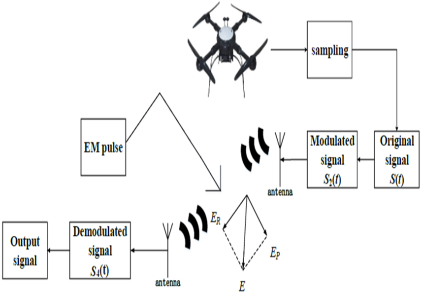

Yu Sun | 孙宇
Ph.D. Student,
Mechanilcal Engineering,
University of Georgia
Member,
Mobility Systems Control (MSC) Lab
I am a Ph.D. student in Mechanical Engineering at University of Georgia advised by Professor Yunli Shao. I am interested in Autonomous Vehicles and End to End Autonomous Driving. My research aims to liberate drivers in the real world to achieve true autonomous driving. 🚗.
Prior to joining MSC, I earned my Bachelor’s degree from the School of Vehicle Engineering at Chongqing University of Technology and Master’s degree from the College of Mechanical and Vehicle Engineering at Chongqing University where I started my research on Multibody Dynamics and Machine Learning with Prof. Yongjun Pan.
Highlights
News
- [Aug, 2025] Started my Phd journey at UGA!!
- [Feb, 2024] One paper get accepted to MSD.
- [Oct, 2023] One paper gets accepted to EAAI.
- [June, 2023] Has successfully got my Master's degree (Outstanding)!
- [May, 2023] Has successfully defended my Master's thesis!
- [Oct, 2022] One paper gets accepted to RESS.
- [Apr, 2022] One paper gets accepted to VSD.
- [May, 2020] Has been admitted to CQU.
- [May, 2020] Has been admitted to CQU.
Publications
*: indicating equal contribution. You can also check my Google Scholar profile.
-
Maneuver-based deep learning parameter identification of vehicle suspensions subjected to performance degradationVehicle System Dynamics, 2022[Link]
-
Machine learning approaches to estimate suspension parameters for performance degradation assessment using accurate dynamic simulationsReliability Engineering and System Safety, 2023[Link]
-
A lane-changing trajectory re-planning method considering conflicting traffic scenariosEngineering Applications of Artificial Intelligence, 2023[Link]
-
Combined recurrent neural networks and particle-swarm optimization for sideslip-angle estimation based on a vehicle multibody dynamicsmodelMultibody System Dynamics, 2024[Link]
Projects


- Adaptive grasp in dynamic environments (COMS6998-5 Robotic Learning Course Project) - advised by Professor Shuran Song
- Hierachical object detection (COMS6998-1 Representation Learning Course Project) - advised by Professor Carl Vondrick
- Learning the Predictability of the Future (EECS6691 Advanced Deep Learning Course Project) - advised by Professor Zoran Kostić
Teaching
Teaching assistant at Nanjing Normal University for:
- Microcomputer Principles and Interface Technology - Fall 2019
Talks
- Poster presentation at Northeast Robotics Colloquium (NERC) 2022 - October 8 · UMass Lowell